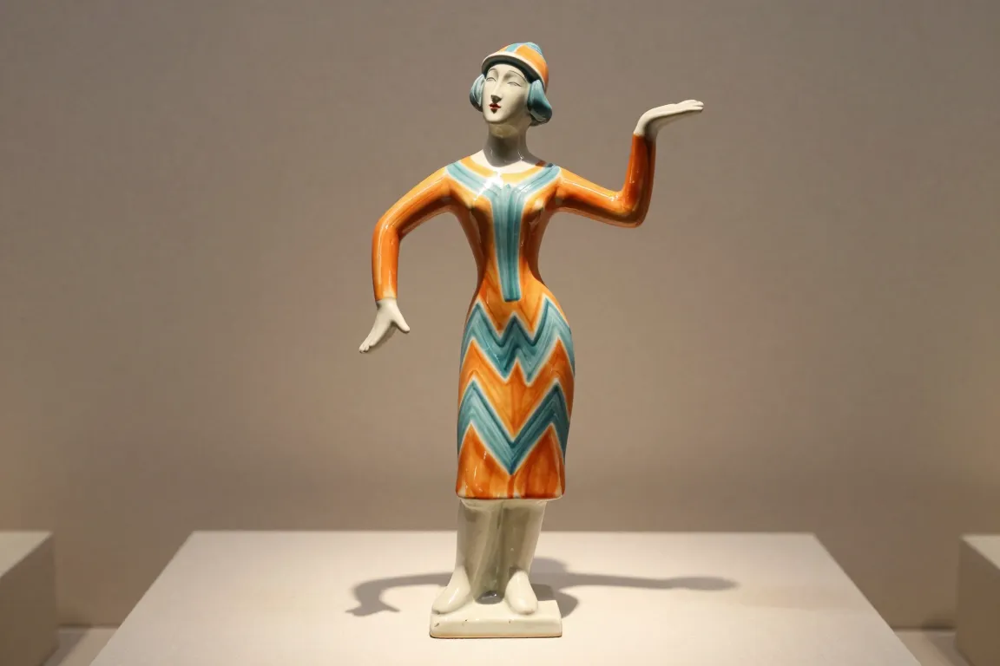

Slip-cast figures of dancers, bathers, birds and gazelles with long limbs, sharp planes and bold colour. Makers in Vienna, Turin and Bohemia made them in earthenware for the cabinet and the cocktail room.

Core thesis
The modern woman, the dancer and the fast animal are stylised into long lines and flat planes, then cast in clay and painted in hard, bright colours.
Design principles
Stylise the body into long, thin limbs and a small head, with a total height of 20 to 45 cm.
Cut the face and the hair into sharp planes, and give the figure a bob or a short cap of hair.
Take the pose from the dance, the swim or the sport: a Charleston step, a diver, a bow with a long scarf.
Cast the figure in earthenware from a plaster mould, and hold the wall at 4 to 6 mm.
Cover the figure with a smooth matt or satin glaze in a few flat colours.
Set two colours in hard contrast: black and ivory, orange and turquoise, silver and red.
Add geometric patterns on the dress: zigzags, triangles, circles and stripes.
Mount a figure on a stepped, geometric base, in black, marble or a glazed block.
Anti-patterns
A fussy rococo S-curve with lace and flowers
A naturalistic soft body with a round, doll-like face